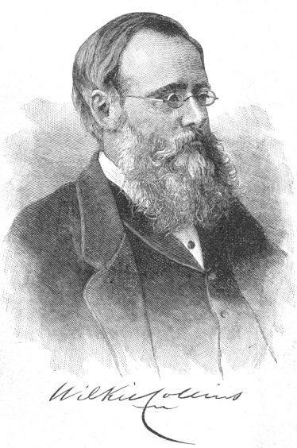

|
 |
This web site provides accurate texts of the novels and stories of Wilkie Collins (1824-1889). A close friend of Charles Dickens, Collins is one of the most readable (and surprisingly modern) of the Victorian novelists. Most of the works here are based on the New York Collier edition of 1900, and are thus in the public domain. I have silently corrected obvious misspellings and typographical errors; however, no attempt has been made to force the spelling to conform either to British standards or to American ones. Plain text versions of many of these works have been donated to Project Gutenberg. The texts of Wilkie's most famous novels, The Woman in White and The Moonstone are available offsite. The short novel The Haunted Hotel is also offsite. With these three exceptions, this site contains the complete fiction of Wilkie Collins, as well as the letters Charles Dickens wrote to Collins. For the rest of Wilkie Collins' non-fiction, the best source is Paul Lewis' website. Besides non-fiction you will find much information about Collins' life, where he lived, and virtually every photograph taken of the author. Plot summaries of the novels are here, thanks to Andrew Gasson. Please scroll down to see the Wilkie Collins titles available for reading... |
|
Antonina (1850) |
Basil (1852) |
|
Hide and Seek (1854) |
A Rogue's Life (1856) |
|
The Dead Secret (1857) |
The Woman in White (1860) |
|
No Name (1862) |
Armadale (1866) |
|
No Thoroughfare (1867, with Dickens) |
The Moonstone (1868) |
|
Man and Wife (1870) |
Poor Miss Finch (1872) |
|
The New Magdalen (1873) |
The Law and the Lady (1875) |
|
The Two Destinies (1876) |
My Lady's Money (1877) |
|
The Haunted Hotel (1879) |
The Fallen Leaves (1879) |
|
Jezebel's Daughter (1880) |
The Black Robe (1881) |
|
Heart and Science (1883) |
I Say No (1884) |
|
The Evil Genius (1886) |
The Guilty River (1886) |
|
The Legacy of Cain (1889) |
Blind Love (1890) |
Books of Stories
|
After Dark (1856) |
The Queen of Hearts (1859) |
Little Novels (1887) |
Individual Short Stories and Short Novels
in the order of publication
|
A Terribly Strange Bed (1852) in After Dark |
Mr Wray's Cash Box (1852) |
|
Gabriel's Marriage (1853) in After Dark |
A Stolen Letter (1854) in After Dark |
|
Sister Rose (1855) in After Dark |
The Yellow Mask (1855) in After Dark |
|
Mad Monkton (1855) in Queen of Hearts |
The Dream Woman (1855) in Queen of Hearts |
|
The Lady of Glenwith Grange (1856) in After Dark |
Anne Rodway (1856) in Queen of Hearts |
|
The Black Cottage (1857) in Queen of Hearts |
The Family Secret (1857) in Queen of Hearts |
|
The Dead Hand (1857) in Queen of Hearts |
A Plot in Private Life (1858) in Queen of Hearts |
|
The Biter Bit (1858) in Queen of Hearts |
Fauntleroy (1858) in Queen of Hearts |
|
The Parson's Scruple (1859) in Queen of Hearts |
Blow Up with the Brig! (1859) |
|
The Cauldron of Oil (1861) |
The Fatal Cradle (1861) |
|
Miss or Mrs? (1871) |
The Dead Alive (1874) |
|
The Frozen Deep (1874) |
A Fatal Fortune (1874) |
Included in Little Novels :
|
Mr. Captain & the Nymph (1876) |
|
|
Mr. Percy & the Prophet (1877) |
Miss Bertha & the Yankee (1877) |
|
Miss Mina & the Groom (1878) |
Mr. Marmaduke & the Minister (1878) |
|
Mrs. Zant & the Ghost (1879) |
Mr. Policeman & the Cook (1881) |
|
Mr. Cosway & the Landlady (1881) |
Miss Morris & the Stranger (1881) |
|
Mr. Lismore & the Widow (1883) |
Mr. Lepel & the Housekeeper (1884) |
|
Mr. Medhurst & the Princess (1884) |
Miss Dulane & My Lord (1886) |
Stories from Collaborations with Dickens
|
John Steadiman's Account (1856) |
The Deliverance (1856) |
|
The Prison in the Woods (1857) |
The Seafaring Man (1860) |
Non-Fiction
|
Rambles beyond Railways (1851) |
|
|
The Lazy Tour of Two Idle Apprentices (1857, with Dickens) |
My Miscellanies (1863) |
|
Letters of Charles Dickens (1880) |
Plays
|
No Name (1863, by W. B. Bernard) |
No Thoroughfare (1867, with Dickens) |
|
Black and White (1869) |
No Name (1870) |
|
The Woman in White (1871) |
The New Magdalen (1873) |
|
The Moonstone (1877) |
The Frozen Deep (1866) |
Email comments and suggestions to James Rusk
This page last updated: 28 June 2009